---
layout: default
title: Last-mile delay survey / 2019-06-01 / AS28573
---
AS28573, CLARO S.A., BR
Summary
- Daily last-mile fluctuations: low
- Number of probes: 14
- APNIC eyeball rank: 21
- Daily fluctuations: True
- Main frequency: 0.0417
- Average peak-to-peak amplitude: 0.77ms
Aggregated last-mile queuing delay
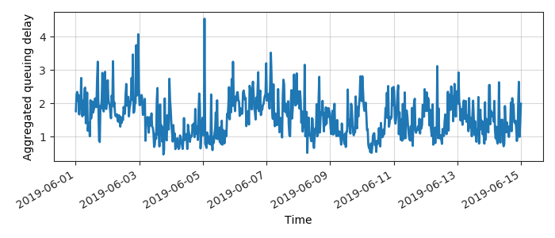
Periodogram
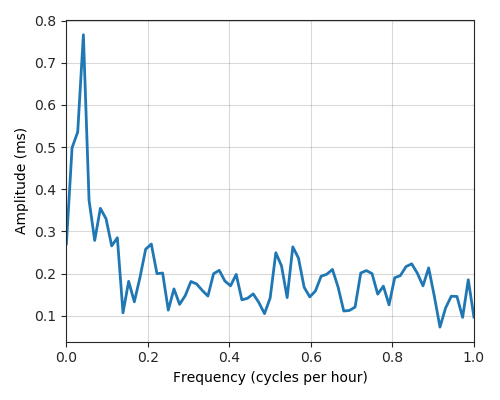
24H profile
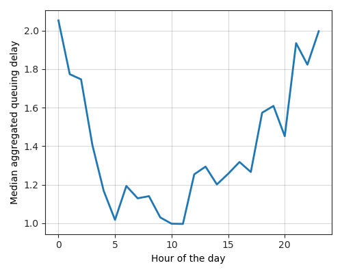
Probes' last-mile RTT
- 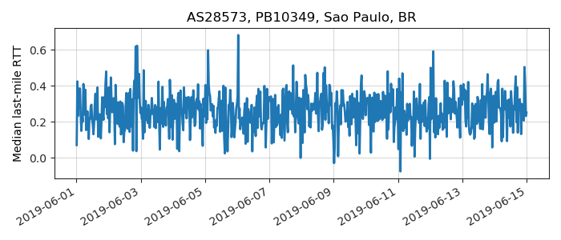

- 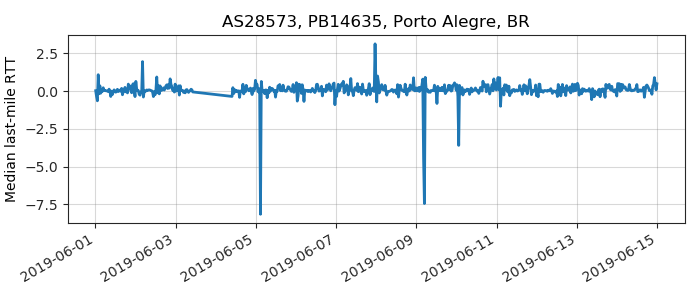
- 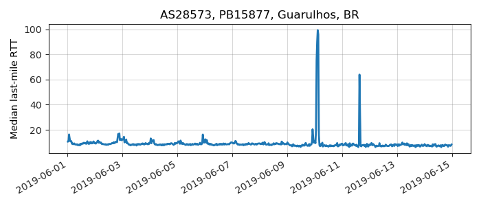
- 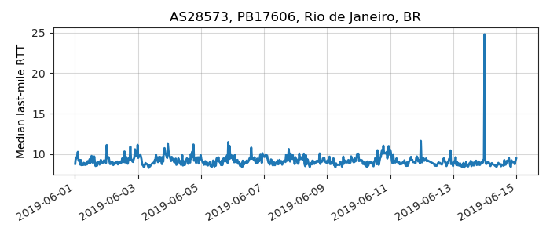
- 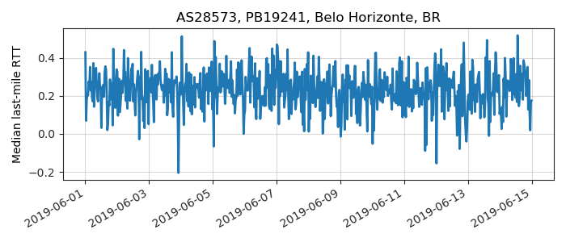
- 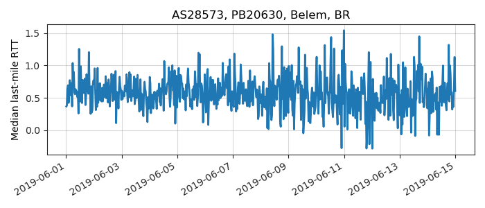
- 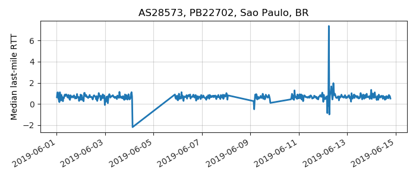
- 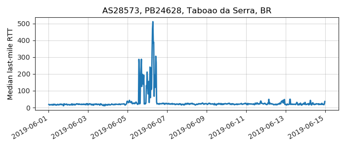
- 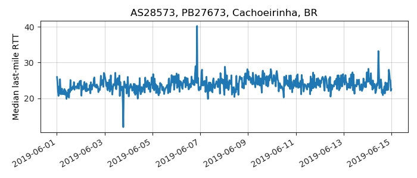
- 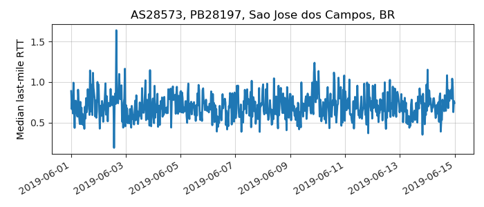
- 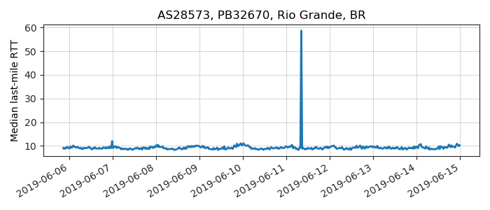

- 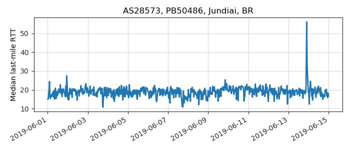